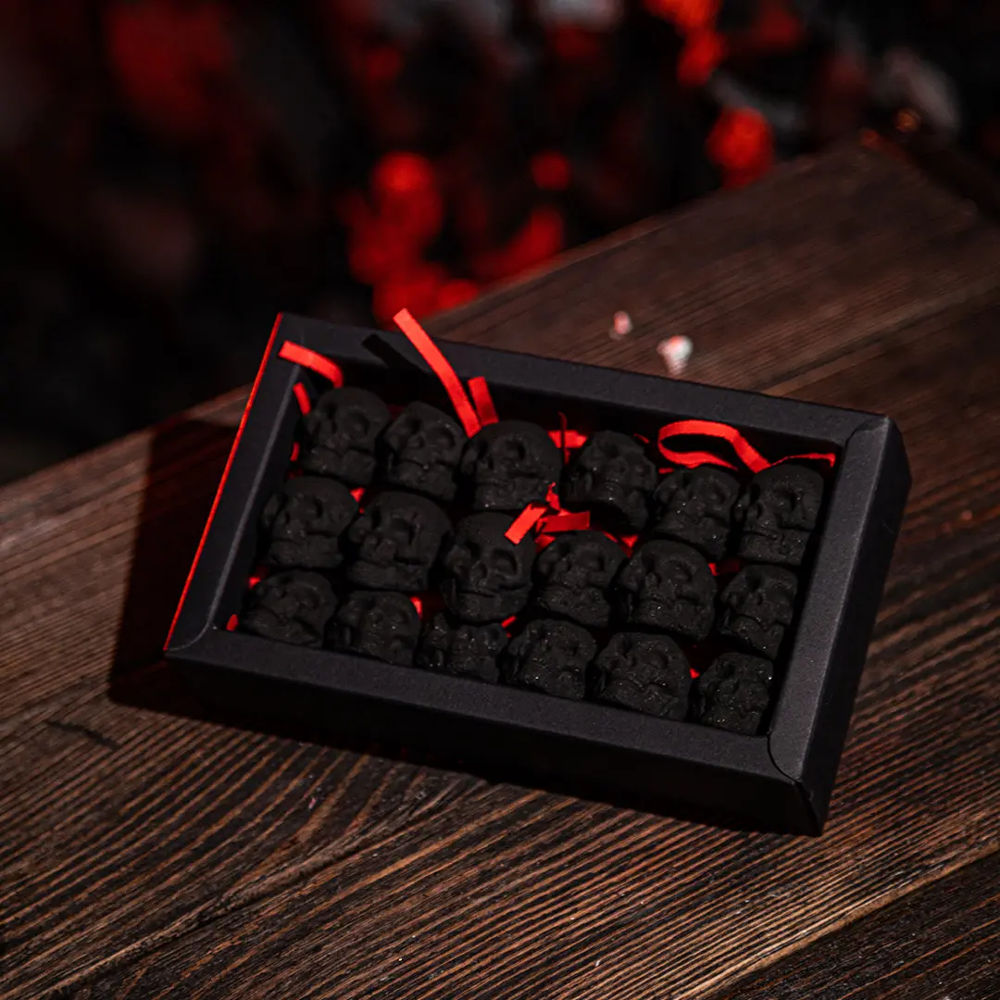
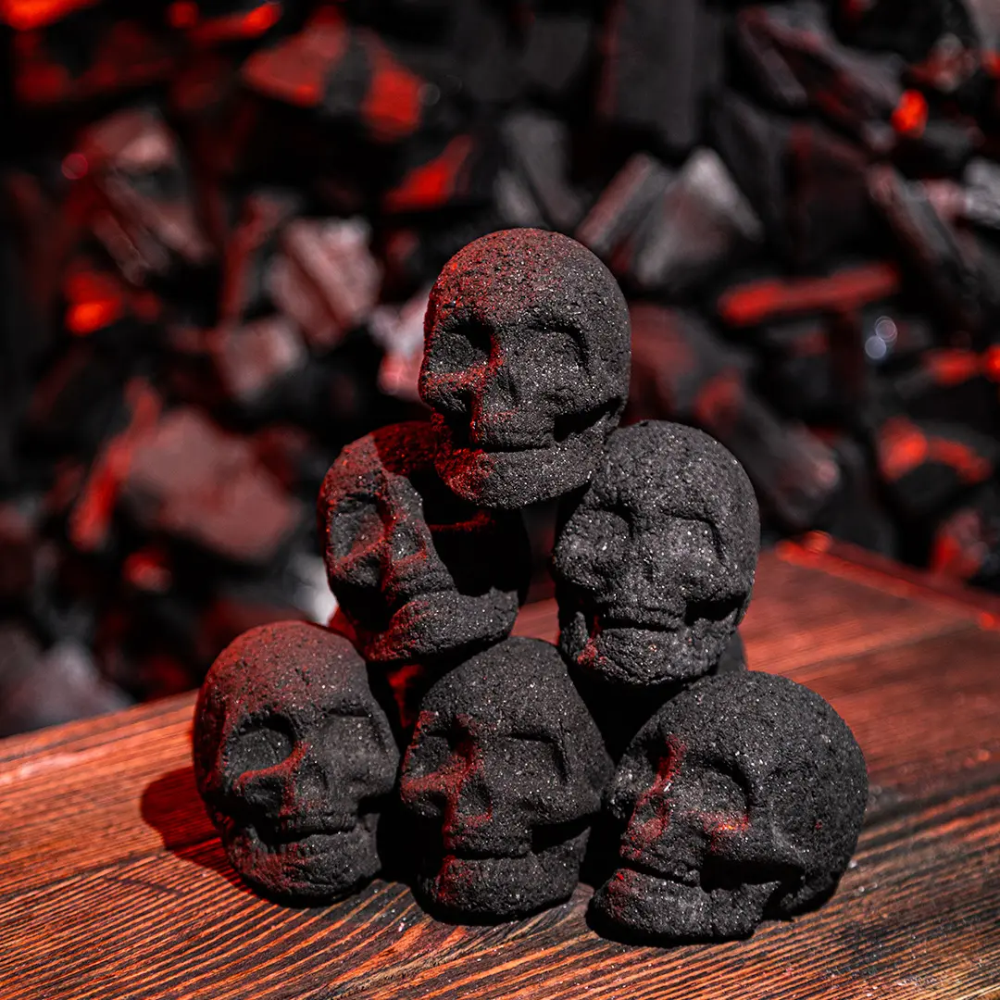

<!DOCTYPE html><html lang="ru"><head><meta charset="utf-8"><meta name="viewport" content="width=device-width, initial-scale=1"><title>Gulp</title><link rel="stylesheet" href="./css-min/default.min.css"><link rel="stylesheet" href="./css-min/normalize.min.css"><link rel="stylesheet" href="./css-min/style.min.css"><link rel="preconnect" href="https://fonts.googleapis.com"><link rel="preconnect" href="https://fonts.gstatic.com" crossorigin><link href="https://fonts.googleapis.com/css2?family=Cormorant+Garamond:ital,wght@0,300;0,400;0,500;0,600;0,700;1,300;1,400;1,500;1,600;1,700&amp;family=Play:wght@400;700&amp;family=Ubuntu:ital,wght@0,300;0,400;0,500;0,700;1,300;1,400;1,500;1,700&amp;display=swap" rel="stylesheet"></head></html><body><div class="page"><div class="header"><div class="header__logo">goloveshki</div><div class="header__nav"><a class="header__nav-link" href="#blockBuy">Купить</a><a class="header__nav-link" href="#blockAbout">О нас</a><a class="header__nav-link" href="#blockFaq">Вопросы</a><a class="header__nav-link" href="#blockOpt">Опт</a></div></div><div class="content"><div class="content__inner"><div class="welcome"><div class="welcome__logo">goloveshki</div><div class="welcome__title">Разожги атмосферу:</div><div class="welcome__text">Наши угли изготавливаются вручную с использованием только лучших материалов, чтобы обеспечить идеальное горение и насыщенный вкус.</div><div class="welcome__arrow-inner"><a class="welcome__arrow" href="#blockBuy"></a></div><div class="welcome__skull welcome__skull--top"></div><div class="welcome__skull welcome__skull--top-left"></div><div class="welcome__skull welcome__skull--top-right"></div><div class="welcome__skull welcome__skull--left"></div><div class="welcome__skull welcome__skull--right"></div><div class="welcome__skull welcome__skull--down-left"></div><div class="welcome__skull welcome__skull--down-right"></div></div><div class="buy" id="blockBuy"><div class="buy__inner"><div class="buy__item"><div class="buy__item-image"></div><div class="buy__item-name">авито</div><a class="buy__item-button" href="#">купить</a></div><div class="buy__item"><div class="buy__item-image"></div><div class="buy__item-name">вб</div><a class="buy__item-button" href="#">купить</a></div></div></div><div class="about" id="blockAbout"><div class="about__image"><div class="about__text-inner"><div class="about__text">Кокосовая скорлуп</div><div class="about__text">Крахмал топиокового дерева</div></div><div class="about__text-inner"><div class="about__text">Древесная берёза класса А</div><div class="about__text">Кукурузный крахмал</div></div><div class="about__text-inner"><div class="about__text">100%</div><div class="about__text">Ручная работа</div></div></div></div><div class="faq" id="blockFaq"><div class="faq__inner"><div class="faq__image"></div><div class="faq__item-inner"><div class="faq__item faq__item--active"><div class="faq__item-label"><div class="faq__item-ask">Выделяют ли наши угли запах?</div><div class="faq__item-button"></div></div><div class="faq__item-text">Наши угли ручной работы отличаются высоким качеством и не выделяют неприятных запахов. Они создаются из натурального материала, что обеспечивает чистое и приятное вкусовое восприятие. Вы сможете насладиться настоящим ароматом ароматических веществ, раскрывающихся при курении кальяна или жаре мангала.</div></div><div class="faq__item"><div class="faq__item-label"><div class="faq__item-ask">Насколько быстро прогорают?</div><div class="faq__item-button"></div></div><div class="faq__item-text">Наши угли тщательно отбираются и обрабатываются, что позволяет им сохранять стабильное тепло в течение длительного времени. Благодаря своим уникальным свойствам, таким как плотная компрессия, они обеспечивают равномерное горение, позволяя вам наслаждаться длительными сессиями.</div></div><div class="faq__item"><div class="faq__item-label"><div class="faq__item-ask">Подходят ли для всех кальянов?</div><div class="faq__item-button"></div></div><div class="faq__item-text">Да, наши угли универсальны и подходят для использования в большинстве кальянов и мангалов, обеспечивая отличные результаты независимо от типа оборудования.</div></div></div></div></div><div class="video__inner"><video class="video" controls><source src="./video/video.mp4" type="video/mp4"><Your>browser does not support the video tag.</Your></video></div><div class="opt" id="blockOpt"><div class="opt__inner"><div class="opt__title"></div><div class="opt__form-inner"><div class="opt__form"> <input class="opt__textform textform" type="text" placeholder="Имя"/></div><div class="opt__form"> <input class="opt__textform textform" type="text" placeholder="Телефон"/></div><div class="opt__form"> <input class="opt__textform textform" type="text" placeholder="Город"/></div><div class="opt__form"> <input class="opt__textform textform" type="text" placeholder="Организация"/></div><div class="opt__form"> <input class="opt__textform textform" type="text" placeholder="Кол-во для заказа"/></div><a class="opt__button" href="#">Отправить заявку</a></div></div></div></div></div><div class="footer"><div class="footer__left"><div class="footer__logo">goloveshki</div><div class="footer__contact">goloveshki@rambler.ru</div></div><div class="footer__link-inner"><a class="footer__link" href="#"></a><a class="footer__link" href="#"></a></div></div></div></body><script src="./js-bundle/main.bundle.js" defer></script>